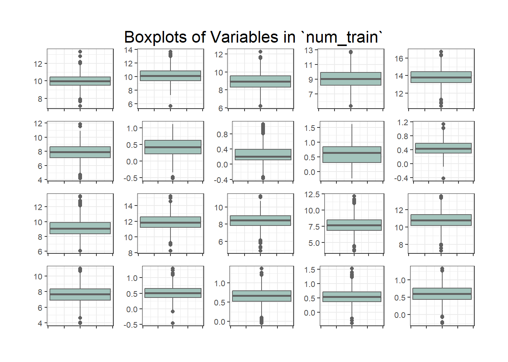
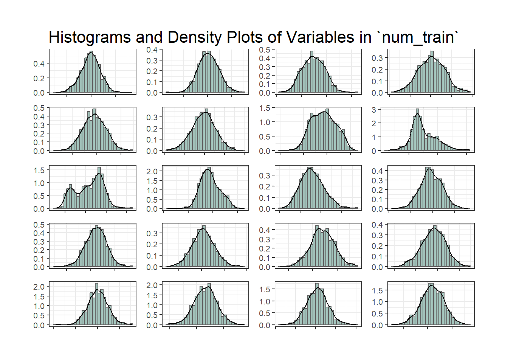

Chemical Sample Classification Report
Exploratory Data Analysis
Only the train dataset will be analysed in the EDA stage.
Overall Size and Shape
train has 1225 rows, with an overall minimum value of -0.52 (X7) and an overal maximum value of 16.76 (X5).
The variables have different scales and variances:
Statistic | Minimum | Maximum |
|---|---|---|
Mean | 0.25 (X8) | 13.8 (X5) |
Variance | 0.04 (X10) | 1.57 (X4) |
Range | 1.42 (X18) | 8.37 (X14) |
At a glance, we can see that there is a significant spread across the data in the dataset in terms of mean, variance and range.
Outliers
In addition to variables having different scales, we also need to consider outliers - that is, values which are significantly different from other data points for a given variable. These could be as a result of error (measurement, data entry), faulty or uncalibrated equipment, or they could be genuine measurements.
Genuine extreme values need to be retained in order to add valuable information to the model. However, problematic outliers need to be identified and either treated or removed before further analysis, as they could skew the analysis and model.
Outliers can be observed visually through plots such as boxplots and histograms.

Another approach is to calculate a statistic (z-score) for each variable.
[insert explanation and outcome]
Decision
Given no prior knowledge about the dataset or domain, the train data will be scaled before proceeding, resulting in a dataset where all variables have a mean of 0 and a standard deviation of 1.
This mitigates against any single variable having undue influence in the classification model as a result of different scales.
Outliers will be retained. It is assumed that they are genuine measurements which will add to the model’s performance.
Caution
With their domain knowledge, the client should consider whether outliers are problematic. Additional contextual information could result in different approaches to handling outliers, including removal or transformation.
Observations * many normal distributions * some which differ across labels, eg. X7-X11
NOTES BELOW
so there appears to be value in two different approaches * correlation for dimension reduction * needs domain knowledge to clarify and ratifiy, explain
- feature reduction - several variables which may be superfluous, measuring similar things or do not add to the model
To do * normalise and scale * check for outliers * address outliers as appropriate * correlation plot
To try:
interpretation - say what you see * sparse - lots of variables which are not correlated with each other * x17-20, and x7-10 appear to correlate, some neg, some pos